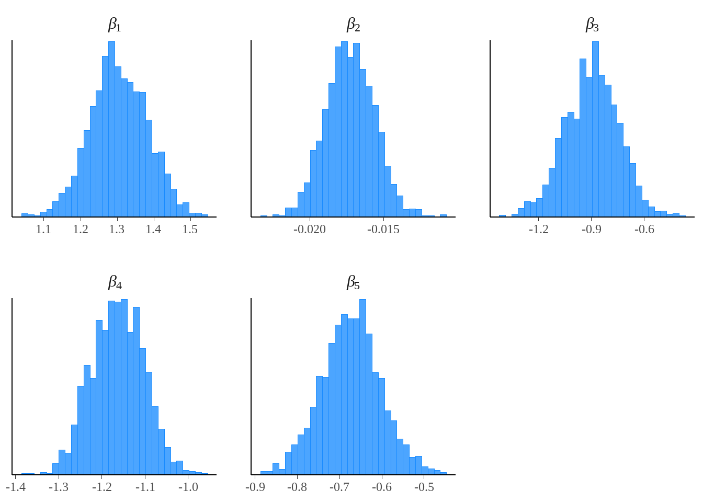

Spaceship Titanic - Introduction to Bayesian Models - Part 2
Part 2: Initial Modelling
Welcome to Part 2 of my Introduction to Bayesian Models series.
Before I begin building the model, recall the three insights we found in Part 1:
Passengers from Age 0-17 were more likely to be transported.
Non-VIP passengers were more likely to be transported.
Passengers with a Home Planet of Europa were more likely to be transported.
I’m sure this is a small subset of the available insights of our data, but I don’t want to make the model too complicated before even starting so we will stick with implementing these three factors in Part 2.
Starting with Stan
Stan is a probabilistic programming language for statistical inference. To write a Stan model, I will create a .stan file using the Stan programming language, and then compile and run this model in R using the rstan package.
I will first show the basic Stan code for the model, and explain each of the blocks:

data
This section declares all of the data that will be used in the model.
This is data that needs to be provided by the user to run a Stan model.
I will be using an N x K design matrix that has N distinct observations, and K predictive variables.
parameters
This section defines all of the unknown parameters in your model that Stan will estimate using the data.
In our model, we will be estimating the \(\beta\) coefficients which are the corresponding linear effects of each of the K predictor variables.
model
This section will define the statistical model (using a log-likelihood function), prior distributions, and provide the mathematical link between your parameters and observed data.
In Part 1 I decided to use a logistic regression. This distribution is implemented in Stan using the
bernoulli_logit(...)function.Note that Age is a continuous variable, so unless we make any modification to the predictive variable or the model structure, it will be modeled as a linear effect which we saw previously may not be completely accurate. We can still run the model without making any changes and see what the output tells us.
generated quantities
- After running a Stan model and having some fitted posterior distributions from the data, you may want to sample from these distributions (or even from some algebraically manipulated variation of the distributions). Sampling can be set up in the
generated quantitiesblock.
Handling Missing Values
It turns out there are some missing values in the Age, VIP, and HomePlanet fields.
The easiest way to handle missing values is to impute them using the mice package in R.
Imputation helps us fill in these gaps with plausible values, ensuring that our analysis can proceed without dropping entire rows or columns which might lead to loss of valuable information.
mice stands for Multivariate Imputation by Chained Equations, a technique that provides a more nuanced approach than simply filling in the missing entries with average values. You could think of it as an iterative regression on the NA values using the non-NA values for that observation.
I want to make sure I don’t include the Transported field when doing imputation for two reasons:
- I don’t have this field available in my test dataset, where I will need to do the same thing.
- That would be considered a form of [data leakage](https://en.wikipedia.org/wiki/Leakage_(machine_learning)).
sst_transported <- sst_data_stan$Transported
sst_no_transported <- sst_data_stan[, -"Transported"]
imputed_sst <- mice(sst_no_transported, m = 1, printFlag = FALSE)
imputed_sst_data <- complete(imputed_sst, 1)
imputed_sst_data$Transported <- sst_transported
imputed_sst_data <-
imputed_sst_data %>%
mutate(HomePlanet = factor(HomePlanet, levels = unique(HomePlanet)),
VIP = factor(VIP, levels = unique(VIP)))Fitting the Initial Model
Here is what the first 10 rows of the design matrix (denoted as X in our Stan code) looks like:
imputed_sst_data %>%
model.matrix(`Transported` ~ `Age` + `VIP` + `HomePlanet`, data = .) %>%
as.data.frame() %>%
slice(1:10) %>%
rj_custom_table()(Intercept) | Age | VIPTRUE | HomePlanetEarth | HomePlanetMars |
|---|---|---|---|---|
1 | 39 | 0 | 0 | 0 |
1 | 24 | 0 | 1 | 0 |
1 | 58 | 1 | 0 | 0 |
1 | 33 | 0 | 0 | 0 |
1 | 16 | 0 | 1 | 0 |
1 | 44 | 0 | 1 | 0 |
1 | 26 | 0 | 1 | 0 |
1 | 28 | 0 | 1 | 0 |
1 | 35 | 0 | 1 | 0 |
1 | 14 | 0 | 0 | 0 |
From the design matrix and the Stan code we can see that this model will need to estimate five separate \(\beta\) parameters, one for each column of the design matrix.
I will now fit the initial model using the stan(...) function from the rstan library.
Referencing the parameters I defined in the data block in the Stan code above, we will need to provide the stan(...) function with a named list of parameters N, K, X, and y. Note that I am running a model with 2 chains of 2,000 iterations each (which will be split into 1,000 warm-up iterations and 1,000 sampling iterations per chain.)
You can think of the model fitting as exploring a potentially jagged K-dimensional terrain across the parameter space and the log-likelihood of observing the data at each point using that specific set of parameters is the height. We start in 4 random locations on this terrain, and hope that these chains end up in the exact same spot of maximum likelihood and stabilize so that we can draw credible and usable posterior parameter estimates.
The exact method that Stan uses to explore this terrain is complex and definitely beyond the scope of this blog, but if you’re interested in learning more, you should read about Hamiltonian Monte Carlo and the no-U-turn sampler.
sst_design_matrix <-
imputed_sst_data %>%
model.matrix(`Transported` ~ `Age` + `VIP` + `HomePlanet`, data = .)
sst_response <- as.integer(imputed_sst_data$Transported)
if (!file.exists("../../assets/models/sst_model_1.rds")){
sst_fit_1 <-
stan(file = "../../assets/stan/spaceship_titanic_2.stan",
data = list(N = nrow(sst_design_matrix),
K = ncol(sst_design_matrix),
X = sst_design_matrix,
y = sst_response),
chains = 2,
iter = 2000)
save(sst_fit_1, file = "../../assets/models/sst_model_1.rds")
} else {
load("../../assets/models/sst_model_1.rds")
}Model Diagnostics
That model was easy enough to set up and run! Let’s examine what the resulting posterior distributions look like.
mcmc_hist(as.array(sst_fit_1, pars = "beta"),
facet_args = list(labeller = ggplot2::label_parsed)) +
theme(text = element_text(size = 24),
axis.text = element_text(size = 18), # Tick text size
axis.title = element_text(size = 24), # Axis label size
strip.text = element_text(size = 24))
Interestingly, it looks like our posterior distributions for the \(\beta\) parameters are looking approximately normal with reasonably tight standard errors, even though we didn’t even set any explicit prior distributions at all in the model block of the Stan code. Normally, the advantage of Bayesian models is the ability to incorporate expert opinion through prior distributions but this is not required. Instead you can use what is called a flat prior which basically indicates we have no prior information about what the distribution or mean of the \(\beta\) parameters would be.
rounded_betas <- rstan::extract(sst_fit_1)$beta %>%
apply(2, mean) %>%
round(4)
names(rounded_betas) <- c("beta[1]", "beta[2]", "beta[3]", "beta[4]", "beta[5]")
rounded_betas %>%
t() %>%
as.data.frame() %>%
rj_custom_table()beta[1] | beta[2] | beta[3] | beta[4] | beta[5] |
|---|---|---|---|---|
1.3045 | -0.0173 | -0.8962 | -1.163 | -0.6726 |
One final check: Are these \(\beta\) means in the same direction of what we expected from the univariate analysis in Part 1?
beta[1]: (Intercept)
This quantity represents the baseline, which should correspond to a passenger who is Age 0, not a VIP, and having a home planet of Europa.
To convert into a probability, we can undo the logit function manually.
\(p = \frac{e^{\beta_1}}{1 + e^{\beta_1}}\)
\(p = 78.7\%\)
beta[2]: (Age)
We can see a decreasing effect in Age, where every increase of Age by 1 year decreases the log odds of Transportation by -0.0173.
We did observe a decreasing effect with Age although it wasn’t exactly linear and mostly flat after Age 17.
beta[3]: (VIP = TRUE)
Being a VIP reduces the log odds of Transportation by -0.8962 compared to the baseline of not being a VIP.
We can demonstrate what that means in terms of probability by calculating the Transportation prediction to a passenger who is Age 0, a VIP, and having a home planet of Europa and comparing that to the baseline probability of 78.7%.
\(p = \frac{e^{\beta1 + \beta3}}{1 + e^{\beta1 + \beta3}}\)
\(p = 63.3\%\)
beta[4]: (Home Planet = Earth)
- Having a home planet of Earth reduces the log odds of Transportation by -1.1629 compared to the baseline of Europa.
beta[5]: (Home Planet = Mars)
- Having a home planet of Mars reduces the log odds of Transportation by -0.6846 compared to the baseline of Europa.
And finally, how do the new model’s predictions perform on the training data? Remember that roughly 50% of the travelers were Transported in the original data, so let’s see if we can identify who was Transported more accurately than randomly guessing by using a confusion matrix.
Since we are testing the model on the same data we trained it on, these metrics are also referred to as training error and probably an optimistic estimate of how the model would generalize to data it hasn’t been trained on before.
y_pred_means <- apply(rstan::extract(sst_fit_1, "y_pred")$y_pred, 2, mean)
y_pred_factor <- factor(ifelse(y_pred_means > 0.5, TRUE, FALSE))
sst_response_factor <- factor(ifelse(sst_response == 1, TRUE, FALSE))
confusionMatrix(y_pred_factor, sst_response_factor)Confusion Matrix and Statistics
Reference
Prediction FALSE TRUE
FALSE 2884 2041
TRUE 1431 2337
Accuracy : 0.6006
95% CI : (0.5902, 0.6109)
No Information Rate : 0.5036
P-Value [Acc > NIR] : < 2.2e-16
Kappa : 0.202
Mcnemar's Test P-Value : < 2.2e-16
Sensitivity : 0.6684
Specificity : 0.5338
Pos Pred Value : 0.5856
Neg Pred Value : 0.6202
Prevalence : 0.4964
Detection Rate : 0.3318
Detection Prevalence : 0.5665
Balanced Accuracy : 0.6011
'Positive' Class : FALSE
Accuracy is one of the most straightforward metrics derived from a confusion matrix. It represents the proportion of true results (both true positives and true negatives) among the total number of cases examined. With no information, we saw that we could randomly guess Transportation correctly 50.4% of the time. Now, given a random traveler we can predict if they were transported or not correctly 60.1% of the time.
Summary + Part 3 Preview
I’d say those are some promising results considering this is the first iteration of the model. I only included three basic factors without too much data exploration, and was able to improve the accuracy from 50.4% to 60.1%. I’d like to see if we can get our training accuracy to at least 80% by the end of this series, which may or may not be possible given the complexity of the data.
There are a couple of specific improvements I plan on making in Part 3:
Comparing a new model to this one to test for improvement using an ROC curve.
Fitting Age using a non-linear fitted effect instead of a linear effect term (possibly with the help of a generalized additive model or spline.)
Exploring the use of Cabin as a predictor variable, and eventually using a hierarchical model (also called multilevel model) structure.
Stay tuned for Part 3, and thanks again for reading Part 2 of the Spaceship Titanic series using Bayesian modeling.
UPDATE: Part 3 is out! You can read it here.